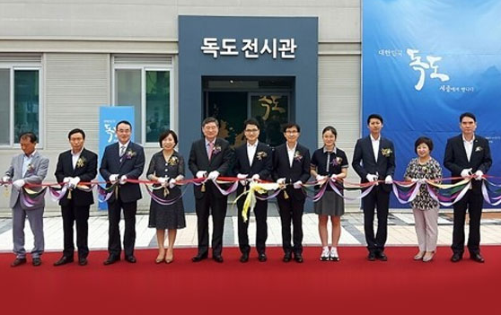
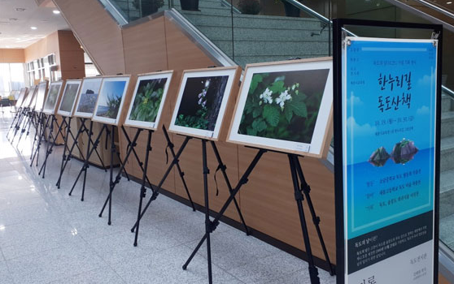
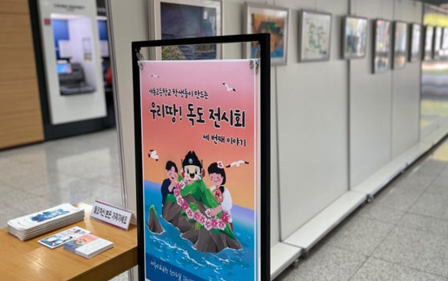

- 2017년
- 08. 28.독도전시관 개관
- 08. 28.초대 윤재국 관장 취임
- 08. 28. ~ 현재대한민국 독도 사진전 (상설전시)
- 11. 10. 독도의 날 UCC 대회 개최
- 12. 21. 독도 골든벨 대회 개최
- 12. 26. 독도 인문학 특강 실시
- 2018년
- 04. 04. 일본의 독도 역사 왜곡 시정 촉구 대회 개최
- 07. 26. ~ 28. 독도교육 실천 우수 교원ㆍ학생 15명 독도탐방
- 10. 25. 독도의 날 독도 플래시몹 경연대회 개최
- 2019년
- 03. 04. 3·1만세운동 100주년 기념 독도 플래시몹 행사 개최
- 03. 22. 지도가 밝히는 한국영토 독도의 진실 특강 실시
- 03. 26. ~ 04. 13. 지도로 읽는 한국영토 독도 특별전 개최
- 04. 11. 일본 독도 역사 왜곡 시정 촉구 대회 개최
- 06. 20. 경상북도 독도홍보관 독도모형ㆍ강치조형물 이전 설치
- 10. 25. ~ 11. 16.독도의 날 독도 에코백 만들기

- 2020년
- 03. 01. 2대 우준식 관장 취임
- 10. 19. ~ 10. 30.울릉도, 독도 특산・희귀식물 사진 및 학생작품 전시회 개최
- 12. 07. ~ 12. 18.독도교육 체험사례 공모전 개최
- 2021년
- 04. 12. ~ 05. 07. 독도체험교실 운영
- 09. 27. ~ 10. 20.독도의 날 UCC 공모전 개최
- 10. 22.독도의 육상 생태계 특강 실시
- 10. 25. ~ 12. 10.우리땅 독도표현 학생작품 순회 전시회 개최

- 2022년
- 03. 01. 3대 조원근 관장 취임
- 05. 09. ~ 06. 10.독도 디자인 공모전 개최
- 10. 01. ~ 10. 28.독도의 날 기념 SNS 홍보 행사 개최
- 10. 17. ~ 11. 01.우리 땅! 독도 전시회 개최